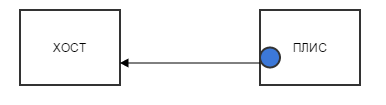
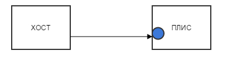
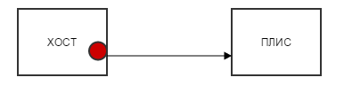
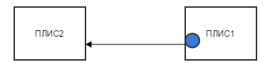

При разработке прикладных программ необходимо детально представлять тракт передачи данных между хост-компьютером и платой RC-47. Рассмотрим этот тракт более подробно. В хост-компьютер установлен адаптер шины PCI Express RHA-25, данный адаптер использует в качестве коммутатора шины PCI Express микросхему PEX8725. Отличительной чертой этой микросхемы является наличие в ней контроллера DMA. В дальнейшем будем называть этот DMA контроллер - хост-компьютер c DMA контроллером. Хост-программа может программировать этот DMA контроллер при помощи библиотек PLX SDK. На рисунке показано условное обозначение DMA контроллера на хост-компьютере.
|
На плате RC-47 расположено четыре ПЛИС XILINX Virtex-7, которые соединены с коммутатором шины PCI Express (PEX8732). Микросхема PEX8732 не имеет DMA контроллера и по-этому мы ее не рассматриваем в тракте передачи данных. Каждая ПЛИС содержит базовый проект в котором присутствует IP ядро для шины PCI Express и встроенный DMA контроллер для этой шины. Будем называть этот DMA контроллер - DMA контроллером ПЛИС. Хост-программа может программировать этот DMA контроллер при помощи библиотеки API PCI Express. На рисунке показано условное обозначение DMA контроллера в ПЛИС.
|
В дальнейшем будем иметь в виду что, если используется блочная передача данных по шине PCI Express между устройствами, хост-компьютер и ПЛИС в любом сочетании, то устройства используют DMA контроллер. Будем говорить, что хост-компьютер является инициатором передачи данных, если для данной передачи используется DMA контроллер адаптера RHA-25. Будем говорить, что ПЛИС является инициатором передачи данных, если для данной передачи используется DMA контроллер этой ПЛИС.
Возможны следующие виды DMA передач между хост-компьютером и ПЛИС:
- ПЛИС - хост-компьютер. Этот вид передачи является записью данных в память хост-компьютера с использованием DMA контроллера ПЛИС. В данном случае инициатором передачи является ПЛИС. Передача осуществляется следующим образом. Хост-программа программирует DMA контроллер ПЛИС на запись данных в память хост-компьютера и затем ожидает прерывания от ПЛИС. ПЛИС генерирует прерывание после окончания записи данных в память хост-компьютера.
 - хост компьютер - ПЛИС. Этот вид передачи является чтением данных из памяти хост-компьютера с использованием DMA контроллера ПЛИС. В данном случае инициатором передачи является ПЛИС. Передача осуществляется следующим образом. Хост-программа программирует DMA контроллер ПЛИС на чтение данных из память хост-компьютера и затем ожидает прерывания от ПЛИС. ПЛИС генерирует прерывание после окончания приема всех данных.
 - хост компьютер - ПЛИС. Этот вид передачи является чтением данных из памяти хост-компьютера и записью их в ПЛИС с использованием DMA контроллера адаптера RHA-25. В данном случае инициатором передачи является хост-компьютер. Более подробное описание передачи данных с использованием контроллера DMA микросхемы PEX8725 можно найти в документации к PLX SDK.
 - ПЛИС - ПЛИС. Этот вид передачи является записью данных в ПЛИС2 с использованием DMA контроллера ПЛИС1. В данном случае инициатором передачи является ПЛИС1. Передача осуществляется следующим образом. Хост-программа программирует DMA контроллер ПЛИС1 на запись данных в ПЛИС2.

{kind=link}
{kind=link}